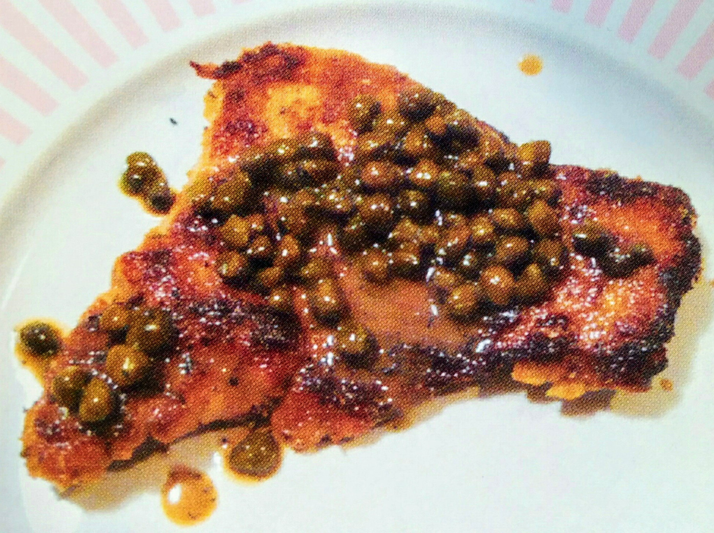

A delicious piece of chicken piccata.
To learn about piccata, click here.
Description
Chicken piccata is a dish of fried chicken covered in a delicious lemon butter caper sauce.
Directions
Cooking the Chicken
In one bowl add whisked egg, salt and pepper
In another bowl, place the breadcrumbs
Bread the chicken pieces by bathing them in the egg mix, then breading them in the bread crumbs bowl, then set the breaded chicken aside.
Make sure to bread both sides of the chicken.
Heat the oil and the butter in a pan, then fry the chicken for 3-5 minutes per side.
Add more oil as needed. Fry the chicken on medium heat to avoid burning it.
Making the Sauce
Remove as much of the oil from the pan as you can. Leave the leftover chicken pieces and browned breadcrumbs in the pan for the sauce.
Add all of the caper brine, but NOT THE CAPERS yet. Add the butter and lemon juice to the pan and heat on low until the sauce is simmering.
Taste the sauce. If it is not very lemony add more lemon juice. If it is not very salty, add more salt. If it is too strong tasting add water. If it is not very strong, cook it down until it is stronger tasting.
Add the capers and cook for 1 minute more. If you cook it for longer the capers will get soft which is bad.